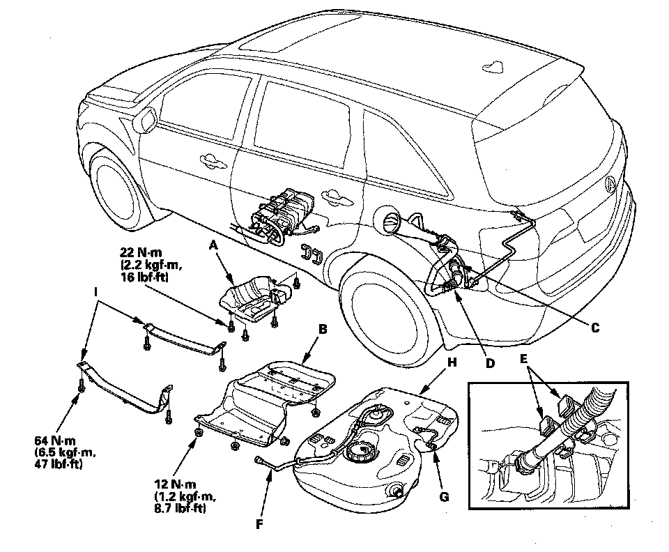

Removal and Replacement
Fuel Tank Replacement1. Drain the fuel tank.
2. Jack up the vehicle, and support it with jackstands.
3. Remove the exhaust pipe.
4. Remove the propeller shaft, and support it with jackstands.

5. Remove the fuel tank guard (A) and fuel tank protector (B).
6. Loosen the clamp (C), and disconnect the tube (D).
7. Open the clamp (E).
8. Disconnect the hoses (F). Slide back the clamps, then twist the hoses as you pull to avoid damaging them.
9. Disconnect the hose (G).
10. Place a jack or other support under the tank (H).
11. Remove the strap bolts and the straps (I).
12. Remove the fuel tank.
13. Install the parts in the reverse order of removal.